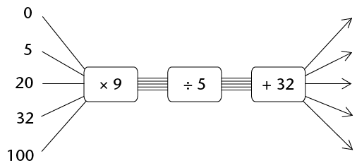
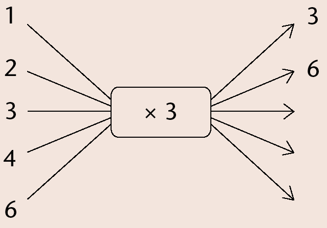

Verbande tussen veranderlikes
In hierdie hoofstuk sal jy leer oor hoeveelhede wat verander, byvoorbeeld die hoogte van ’n boom. Soos wat die boom groei, verander die hoogte. ’n Hoeveelheid wat verander, word ’n veranderlike hoeveelheid genoem of bloot ’n veranderlike. Dit gebeur dikwels dat wanneer een hoeveelheid verander, ’n ander hoeveelheid ook verander. Hoe meer telefoonoproepe byvoorbeeld gemaak word, hoe hoër is die telefoonrekening. Ons sê dan daar is ’n verband tussen die hoeveelheid geld wat jy betaal en die getal oproepe wat jy maak.
Jy sal leer om die verband tussen twee hoeveelhede op verskillende maniere te beskryf.
Konstante en veranderlike hoeveelhede
Soek na verbande tussen hoeveelhede
-
-
Hoeveel vingers het ’n 14-jarige persoon?
-
Hoeveel vingers het ’n 41-jarige persoon?
-
Is die getal vingers aan ’n mens se hand afhanklik van sy ouderdom? Verduidelik.
Daar is twee hoeveelhede in die situasie hier bo: ouderdom en die getal vingers aan ’n persoon se hand. Die getal vingers bly dieselfde, ongeag ’n persoon se ouderdom en is dus ’n konstante hoeveelheid. ’n Mens se ouderdom verander egter, dus is ouderdom ’n veranderlike .
-
-
Kyk nou na die situasies hier onder. Sê elke keer of die een hoeveelheid die ander hoeveelheid beïnvloed. Indien wel, probeer beskryf hoe die een hoeveelheid die ander hoeveelheid sal beïnvloed. Sê ook as daar konstante hoeveelhede in die situasie voorkom.
-
Die getal oproepe wat jy maak en die hoeveelheid lugtyd wat oor is op jou selfoon
-
Die getal huise wat gebou moet word en die getal bakstene wat benodig word
-
Die getal leerders by ’n skool en die duur van die wiskundeperiode
Indien een veranderlike deur ’n ander beïnvloed word, sê ons daar is ’n verband tussen die twee veranderlikes. Soms is dit moontlik om uit te vind watter waarde van die een hoeveelheid, met ander woorde watter getal, gekoppel is aan ’n bepaalde waarde van die ander veranderlike.
-
-
Kyk na die volgende patroon:

-
Hoeveel geel blokkies is daar as daar net een rooi blokkie is?
-
Hoeveel geel blokkies is daar as daar twee rooi blokkies is?
-
Hoeveel geel blokkies is daar as daar drie rooi blokkies is?
-
Vul die ontbrekende getalle by die vloeidiagram hier onder in.
Sien jy die verband tussen die rangskikking van die blokkies hier bo en die vloeidiagram hier onder? Ons kan die verband tussen die rooi en geel blokkies ook in woorde beskryf.
-
Hoeveel geel blokkies sal daar wees as daar 10 rooi blokkies is?
-
Hoeveel geel blokkies sal daar wees as daar 21 rooi blokkies is?
-
Verskillende maniere om verbande te beskryf
Voltooi ’n paar vloeidiagramme en tabelle met waardes
’n Verband tussen twee hoeveelhede kan met ’n vloeidiagram gewys word. In ’n vloeidiagram kan ons nie al die moontlike getalle wys nie, so ons wys net ’n paar.
-
Bereken die ontbrekende invoer- en uitvoergetalle in die vloeidiagram hier onder.
-

Elke invoergetal in ’n vloeidiagram het ’n ooreenstemmende uitvoer- getal . Die eerste (boonste) invoergetal stem ooreen met die eerste uitvoergetal en so aan.
Ons noem \(\times 2\) die operator.
-
Watter tipe getalle is die invoergetalle hier bo?
-
n die vloeidiagram hier bo stem die uitvoergetal 14 ooreen met die invoergetal 7. Voltooi die volgende sinne op dieselfde manier:
In die verband wat deur bostaande vloeidiagram voorgestel word, stem die uitvoergetal ______ ooreen met die invoergetal 5.
Die invoergetal ______ stem ooreen met die uitvoergetal 6.
Indien die vloeidiagram uitgebrei word, sal die invoergetal ______ ooreenstem met die uitvoergetal 40.
-
-
Voltooi die vloeidiagram deur die toepaslike operator in te vul. Skryf ook die reël om die uitvoergetal te bereken in woorde.

In woorde:
-
Voltooi die vloeidiagramme. By (b) moet jy self die operator vind en invul.
-
-
Voltooi die vloeidiagram:
’n Voltooide vloeidiagram wys twee soorte inligting:
- Dit wys watter berekeninge gedoen word om die uitvoergetalle te lewer.
- Dit wys watter uitvoergetal aan watter invoergetal gekoppel is.
Die vloeidiagram wat jy in vraag 4 voltooi het, gee die volgende inligting:
- Elke invoergetal word met 2 vermenigvuldig en dan word 3 bygetel om die uitvoergetal te kry.
- Dit wys watter uitvoergetal aan watter invoergetal gekoppel is.
Die verband tussen invoer- en uitvoergetalle kan ook in ’n tabel weergegee word:
Invoergetalle
0
1
5
9
11
Uitvoergetalle
3
5
13
21
25
-
-
Beskryf in woorde hoe die uitvoergetalle bereken word.
-
Gebruik die tabel om te wys watter uitvoergetalle aan watter invoergetalle gekoppel is in die vloeidiagram hier bo.
-
Vul die toepaslike operator in en voltooi die vloeidiagram.

-
Die vloeidiagramme in vraag 5(a) en 5(c) het verskillende operators, maar gee dieselfde uitvoergetalle vir dieselfde invoergetalle. Verduidelik waarom.
-
-
Die reël om temperatuur van grade Celsius na grade Fahrenheit om te skakel is soos volg: “Vermenigvuldig die grade Celsius met 1,8 en tel 32 by.”
-
Toets of die waardes in die tabel hier onder korrek bereken is. Indien jy ’n fout kry, maak dit reg.
Temperatuur in grade Celsius
0
5
20
32
100
Temperatuur in grade Fahrenheit
32
41
68
212
-
Voltooi die vloeidiagram om die inligting in (a) weer te gee.

-
-
’n Ander reël om temperatuur van grade Celsius na grade Fahrenheit om te skakel is: “Maal die grade Celsius met 9, deel dan met 5 en tel 32 by die antwoord.”
-
Voltooi die vloeidiagram hier onder.

-
Hoe verklaar jy dat die vloeidiagramme in vraag 6(b) en vraag 7(a) dieselfde uitvoergetalle vir dieselfde invoergetalle lewer, al is die operators verskillend?
-
Sal die onderstaande vloeidiagram dieselfde uitvoerwaardes lewer as die vloeidiagram in vraag 7(a)? Verduidelik.

-
-
Die reël om die oppervlakte van ’n vierkant te bereken is soos volg: “Vermenigvuldig die lengte van ’n sy met homself.”
-
Voltooi die tabel hier onder.
Lengte van sy
4
6
10
Oppervlakte van vierkant
64
144
-
Voltooi die vloeidiagram om die inligting in die tabel weer te gee.

-
-
-
Die stapels boublokkies hier onder vorm ’n patroon. Die getal blokkies in elke stapel is afhanklik van die nommer van die stapel.
Voltooi die tabel hier onder om die verband tussen die stapelnommer en die getal blokkies voor te stel.
Stapelnommer
1
2
3
4
5
6
7
8
Getal blokkies
1
8
-
Beskryf in woorde hoe die uitvoerwaardes bereken kan word.
-


Verryking: koppel vloeidiagramme met tabelle en met reëls
-
Voltooi die vloeidiagramme.
-

-

-

- 
-

-
-
Bereken die verskille tussen die opeenvolgende uitvoergetalle en vergelyk dit met die verskille tussen die ooreenstemmende opeenvolgende invoergetalle. Kyk na die operator in die vloeidiagram. Wat let jy op?
-
Gebruik jou kennis om die reël vir die verband tussen die invoer- en die uitvoergetalle in die tabel hier onder in woorde te skryf. Voltooi dan die tabel.:
Invoergetalle
1
2
3
4
5
7
10
Uitvoergetalle
9
16
23